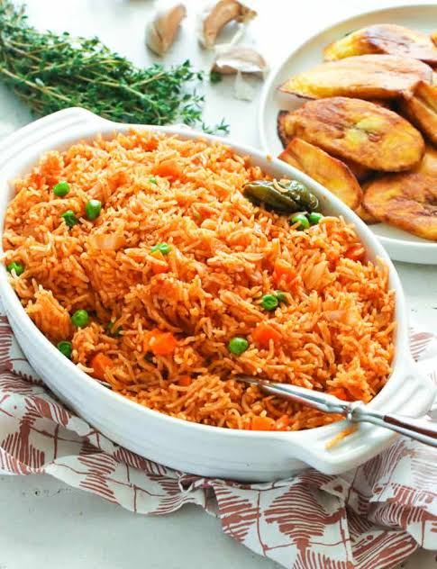

Jollof Rice

Description
Jollof rice is a delicious Nigerian dish. It is made from rice, tomatoes, onions, pepper and seasonings
I usually like my jollof rice very spicy. It is quite easy to make.
Ingredients
- Rice
- Onions
- Tomatoes
- Meat of your choice
- Groundnut Oil
- Pepper
- Seasoning
- Salt
- Bay leaves
- Crayfish
- Carrots
- Green Beans
Steps
- Wash your rice properly.
- Parboil your rice.
- Wash and cook your meat to taste.
- Fry your meat.
- When you rice is parboiled and washed, in a dry pot, put some groundnut oil.
- Add diced onions, pepper & crayfish and tomatoes.
- Keep stirring until you get a dark red colour.
- Add seasonings and bay leaves.(You can decide to add your meat to add more flavour to the meat)
- Stir for 3 minutes and add water.
- Add your parboiled rice and stir.
- Add salt to taste
- Allow to cook till rice is done.
- Add diced carrots and green and stir.
- Let it cook for 3 minutes and then bring down your pot.
And your sweet jollof rice is ready.